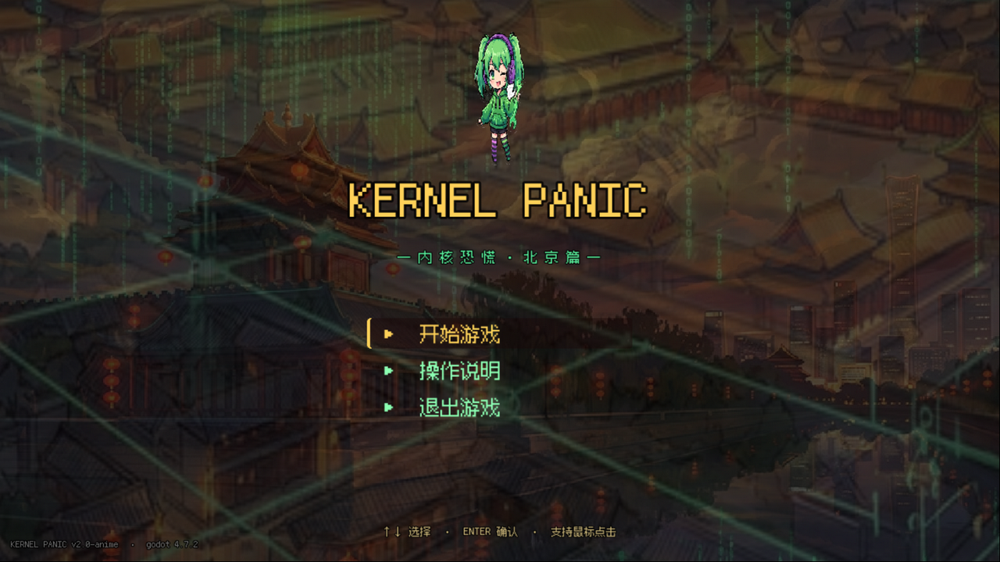

把「杀进程」做成世界观
敌人是 glitch、疾行、石狮卫士与神龙进程，每次击杀都在终端打印 kill -9 PID —— 主题、美术与反馈语言完全统一。

07 / Survivor Arena
二次元动漫风的割草生存 Roguelite：你是系统管理员 @，被困在失控的北京生产节点，用自动火力清剿敌对进程，捡经验数据包、注入升级补丁，活到下一次系统重启。
敌人是 glitch、疾行、石狮卫士与神龙进程，每次击杀都在终端打印 kill -9 PID —— 主题、美术与反馈语言完全统一。
火力自动清怪，玩家的决策集中在走位、捡取经验数据包与升级补丁的构筑选择，单局节奏紧凑。
高频扳手、回旋扳手、引雷术三种武器与普通/稀有/史诗三档补丁，配合精英宝箱、磁铁与可破坏物形成 Build 深度。
全部可调数值收敛到 game_config.gd 单文件；角色逐帧行走动画走 sprite-gen 管线生成，11+ 张 AI 生成资产。
Visual Proof
标题画面、开局战斗与竞技场背景分别对应入口、核心循环与美术管线产出。